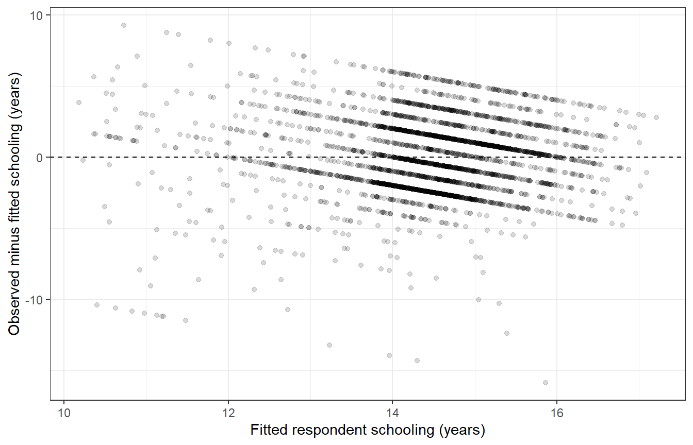

install.packages("modelsummary")24 OLS regression
How is parental schooling associated with respondents’ own schooling when we also consider age and sex? Chapter 23 described a pairwise association. OLS regression lets us state a model for several variables together, inspect its estimates, and check its limitations. We will use a single analysis sample so changes between models do not also change the respondents.
By the end of this chapter, you will be able to:
- Define and describe a common complete-case sample for a model comparison.
- Fit simple and adjusted ordinary least-squares models and interpret coefficient units.
- Inspect residuals and explain what a diagnostic can and cannot establish.
- Present a compact model table and an integrated substantive conclusion.
Use the table operations from the practical chapters, factors from Chapter 15, and graphics from Chapter 11. Prepare the saved extract using Appendix A. Load tidyverse and tidystata; stats::, broom::, and modelsummary:: identify functions from their packages without attaching them.
The reporting step adds modelsummary to the earlier package setup. Install it once before continuing: install.packages() downloads and installs the package named in quotes. You do not need to repeat this installation after restarting R.
library(tidyverse)
library(tidystata)
gss24 <- readRDS("gss24.rds")24.1 Define the question and shared sample
Our first outcome, educ, is highest year of school completed. The main explanatory variable, maeduc, records the mother’s schooling or the younger parent’s schooling for same-sex parents, following the source definition. Age and sex allow a conditional comparison: the parental-schooling association among respondents of the same modeled age and sex. Adding these variables does not identify a causal effect. Family resources, institutions, cohorts, and other unmeasured circumstances can affect the association.
In Chapter 25, the outcome changes to college attainment, defined as a bachelor’s or graduate degree. To keep the OLS and binary comparisons on the same rows, select ID and all variables needed anywhere in the comparison, then exclude rows missing any of them. filter() applies the conditions together. We explicitly place male first in the sex factor: it will be the reference category, the category against which the female coefficient is expressed.
Only after excluding unknown degrees do we create college with if_else(). It is numeric 1 for "bachelor's" or "graduate", and 0 for the other known degrees, including associate/junior college. The %in% comparison is safe here because the preceding filter removed missing degree answers; it would not preserve those answers on its own.
model_data <- gss24 |>
select(id, educ, maeduc, age, sex, degree) |>
filter(!is.na(id), !is.na(educ), !is.na(maeduc), !is.na(age),
!is.na(sex), !is.na(degree)) |>
mutate(
sex = factor(sex, levels = c("male", "female")),
college = if_else(degree %in% c("bachelor's", "graduate"), 1, 0)
)
nrow(gss24)[1] 3986nrow(model_data)[1] 3329summ(model_data, educ, maeduc, age)# A tibble: 3 × 8
name type n unique min mean sd max
<chr> <chr> <int> <int> <dbl> <dbl> <dbl> <dbl>
1 educ dbl 3329 20 0 14.5 2.82 20
2 maeduc dbl 3329 21 0 12.5 3.44 20
3 age dbl 3329 72 18 49.0 17.5 89
model_description <- model_data |>
summarise(n = n(), mean_educ = mean(educ),
mean_maeduc = mean(maeduc),
college_percent = 100 * mean(college), .by = sex)
model_description# A tibble: 2 × 5
sex n mean_educ mean_maeduc college_percent
<fct> <int> <dbl> <dbl> <dbl>
1 male 1484 14.5 12.7 39.8
2 female 1845 14.4 12.3 39.3
The analysis retains 3329 of the extract’s 3986 respondents. Each row remains one respondent; the summary reports schooling and age in years. The sex-specific rows show the group sizes, mean respondent and parent schooling, and college-attainment percentages within this shared sample. A mean of the 0/1 college indicator is a proportion, multiplied by 100 for a percentage. There is no need for na.rm because the required values are observed.
This restriction makes comparisons transparent, but it also excludes respondents who would be usable in an individual model. Complete-case analysis does not repair missing values or guarantee that included respondents resemble excluded ones. We retain the source table unchanged and make no population correction by restricting it.
All models below are unweighted teaching examples with ordinary model-based uncertainty. They do not account for the GSS sampling design. Its wtssps variable is a post-stratification weight; putting it into lm(weights = ...) would not, by itself, supply survey-design inference. We do not do that here.
24.2 Fit a simple linear model
A linear model expresses the expected outcome as an intercept plus coefficients multiplying explanatory variables. In a simple model, the fitted schooling value is an intercept plus a slope times parent schooling. The residual is an observed outcome minus its fitted value. Ordinary least squares (OLS) chooses coefficients that minimize the sum of squared residuals.
stats::lm() fits this model. Its formula educ ~ maeduc places the outcome on the left of ~ and the explanatory variable on the right; data = model_data identifies their table. Assignment saves a model object rather than replacing the respondent table. Printing the object shows the fitted call and coefficients.
ols_simple <- stats::lm(educ ~ maeduc, data = model_data)
ols_simple
Call:
stats::lm(formula = educ ~ maeduc, data = model_data)
Coefficients:
(Intercept) maeduc
10.9984 0.2784 The intercept is fitted respondent schooling when parent schooling is zero. The maeduc slope is the difference in fitted respondent schooling, in years, associated with one additional year of parent schooling. It describes a comparison between respondents in this sample, not the effect of an intervention on their parents.
broom::tidy() returns one row per estimated coefficient. With conf.int = TRUE, it includes the default 95% interval as conf.low and conf.high. estimate gives the coefficient, std.error its estimated standard error, statistic its t statistic, and p.value the two-sided test of a zero coefficient. These inferential columns rely on the model’s assumptions. They do not determine whether a coefficient is substantively important.
ols_simple_tidy <- broom::tidy(ols_simple, conf.int = TRUE)
ols_simple_tidy# A tibble: 2 × 7
term estimate std.error statistic p.value conf.low conf.high
<chr> <dbl> <dbl> <dbl> <dbl> <dbl> <dbl>
1 (Intercept) 11.0 0.173 63.7 0 10.7 11.3
2 maeduc 0.278 0.0133 20.9 4.81e-91 0.252 0.305
Respondents with more educated mothers/younger parents tend to have more schooling. One additional year of parent schooling corresponds to about 0.278 additional years of fitted respondent schooling. Its model-based interval is 0.252 to 0.305 years per parent-schooling year. The intercept describes the fitted line’s starting point, not an average for all respondents.
The fitted model and its coefficient table serve different purposes. ols_simple retains the model for later calculations, while ols_simple_tidy is a tibble that we can select, relabel, or export using the table tools already learned. The model does not become a tibble merely because its input is one. The optional comparison in Section 28.8 follows these object types through both routes.
24.3 Add age and a reference category
The adjusted formula adds age + sex. Within a model formula, + includes separate explanatory terms; it does not add these columns together to form a new variable. A numeric age coefficient represents a linear difference per year of age. R represents the two-level sex factor with a female indicator because male is the reference. Both models use model_data without another filter.
ols_adjusted <- stats::lm(educ ~ maeduc + age + sex, data = model_data)
ols_adjusted_tidy <- broom::tidy(ols_adjusted, conf.int = TRUE)
ols_adjusted_tidy# A tibble: 4 × 7
term estimate std.error statistic p.value conf.low conf.high
<chr> <dbl> <dbl> <dbl> <dbl> <dbl> <dbl>
1 (Intercept) 9.83 0.248 39.6 2.83e-281 9.35 10.3
2 maeduc 0.299 0.0136 22.0 3.89e-100 0.272 0.326
3 age 0.0186 0.00267 6.96 3.94e- 12 0.0134 0.0239
4 sexfemale -0.00641 0.0919 -0.0698 9.44e- 1 -0.187 0.174
The parental-schooling association remains positive after this adjustment: about 0.299 years of respondent schooling per parent-schooling year, holding modeled age and sex constant. Its interval is 0.272 to 0.326. Holding constant describes a comparison within the fitted equation; it does not mean we experimentally fixed those characteristics.
The age coefficient is about 0.019 schooling years per year of age at the same parent schooling and sex. This cross-sectional age pattern combines differences between people and birth cohorts; it is not a prediction that an individual gains that schooling every birthday. sexfemale is female minus male at the same age and parent schooling. Its estimate of -0.006 years is close to zero, with an interval spanning -0.187 to 0.174 years. We retain this weak evidence rather than dropping a prespecified comparison to obtain smaller p-values.
The adjusted intercept refers to a male respondent with age zero and parent schooling zero. Age zero is outside this adult sample, so the intercept mainly positions the fitted equation. A model can contain an interpretable slope without giving a substantively useful intercept at every mathematical origin.
stats::nobs() counts observations actually used by a fitted model. broom::glance() returns one row of overall model statistics. We keep only nobs and r.squared here: R-squared is the fraction of sample variation in the outcome accounted for by the fitted model, relative to an intercept-only fit.
stats::nobs(ols_simple)[1] 3329stats::nobs(ols_adjusted)[1] 3329ols_simple_fit <- broom::glance(ols_simple) |>
select(nobs, r.squared)
ols_adjusted_fit <- broom::glance(ols_adjusted) |>
select(nobs, r.squared)
ols_simple_fit# A tibble: 1 × 2
nobs r.squared
<int> <dbl>
1 3329 0.116
ols_adjusted_fit# A tibble: 1 × 2
nobs r.squared
<int> <dbl>
1 3329 0.129
Both models use 3329 observations. Their R-squared values are about 0.116 and 0.129. Additional terms cannot lower ordinary in-sample R-squared on the same rows, so the increase alone does not establish that a model is appropriate or predicts new respondents well. The shared sample makes this comparison about specifications rather than changing coverage.
24.4 Inspect fitted values and residuals
OLS supplies a fitted mean, not a claim that every respondent lies on that mean. broom::augment() returns the model’s observation-level data with diagnostic columns. .fitted is fitted respondent schooling and .resid is observed minus fitted schooling, both in years. These leading dots are part of the column names. We retain the full result as ols_diagnostics and preview the two columns with familiar select() and head().
ols_diagnostics <- broom::augment(ols_adjusted)
ols_diagnostics |>
select(.fitted, .resid) |>
head()# A tibble: 6 × 2
.fitted .resid
<dbl> <dbl>
1 14.6 1.37
2 14.7 -0.699
3 14.4 -1.42
4 12.3 1.69
5 14.3 -1.31
6 10.9 3.06
Plot residuals against fitted values to look for curvature, changes in spread, and unusually large discrepancies. geom_hline(yintercept = 0, linetype = "dashed") adds a dashed horizontal reference at zero residual. Point transparency reduces overplotting. Neither step changes a fitted value or removes a respondent.
ggplot(ols_diagnostics, aes(x = .fitted, y = .resid)) +
geom_hline(yintercept = 0, linetype = "dashed") +
geom_point(alpha = 0.15) +
labs(x = "Fitted respondent schooling (years)",
y = "Observed minus fitted schooling (years)") +
theme_bw()
Figure 24.1 shows substantial variation around the fitted means and visible structure from bounded, discrete schooling. The upper schooling limit constrains possible positive residuals as fitted values increase. This is a reason to treat the linear equation as a limited summary, not a complete account of schooling attainment. The plot does not certify the model or tell us to delete inconvenient observations.
The ordinary OLS intervals above assume a correctly specified conditional mean and independent errors with constant variance; exact small-sample t inference adds normal errors. A normally distributed outcome is not itself an OLS requirement. A residual plot can reveal problems with mean shape or spread but cannot verify independence, omitted-variable assumptions, or survey-design validity. We keep these limitations alongside the estimates rather than treating a small p-value as a diagnostic.
24.5 Report the analysis as one argument
Return to the question before presenting a table. We asked how respondent schooling relates to parent schooling, defined a common sample, described its composition, fitted simple and adjusted models, and inspected residuals. A results table makes selected estimates comparable; it cannot replace those decisions or their interpretation.
modelsummary::modelsummary() accepts a named list() of models; list() holds the two model objects together and its names label the columns. statistic = "conf.int" puts the default 95% confidence interval beneath each coefficient. stars = FALSE omits significance stars so attention stays on magnitudes and intervals. gof_map = c("nobs", "r.squared") limits the model-summary rows to sample size and R-squared. output = "markdown" produces a table Quarto can format. The chunk’s results: asis displays that Markdown as table content, and Quarto supplies the single caption.
modelsummary::modelsummary(
list("Simple OLS" = ols_simple, "Adjusted OLS" = ols_adjusted),
statistic = "conf.int",
stars = FALSE,
gof_map = c("nobs", "r.squared"),
output = "markdown"
)| Simple OLS | Adjusted OLS | |
|---|---|---|
| (Intercept) | 10.998 | 9.833 |
| [10.660, 11.337] | [9.346, 10.319] | |
| maeduc | 0.278 | 0.299 |
| [0.252, 0.305] | [0.272, 0.326] | |
| age | 0.019 | |
| [0.013, 0.024] | ||
| sexfemale | -0.006 | |
| [-0.187, 0.174] | ||
| Num.Obs. | 3329 | 3329 |
| R2 | 0.116 | 0.129 |
Table 24.1 supports a modest, specific conclusion: among the 3329 included respondents, higher mother/younger-parent schooling is associated with higher respondent schooling. The adjusted estimate is about 0.3 schooling years per parent-schooling year, with a 95% interval of 0.27 to 0.33. Adjusting for age and sex does not remove this association, while the conditional female-minus-male estimate is close to zero and imprecise relative to its size. Considerable schooling variation remains outside these equations, and bounded schooling limits a linear description.
24.6 Review
- Define the question and shared complete-case sample before fitting models; exclusions do not repair missing data.
lm()fits an OLS equation; coefficients require outcome units, predictor units, and an explicit reference category.tidy()reports coefficients and intervals, whileglance()andnobs()summarize the fit and sample.augment()supplies fitted values and residuals for diagnostic plots; a plot cannot validate every assumption.modelsummary()presents selected model results with their limitations.
Next, Chapter 25 uses the same sample to model college attainment and compare predicted probabilities.
24.7 Exercises
- Reconstruct the common sample and both OLS models in a fresh session. Report the adjusted parent-schooling coefficient and interval, with its units and a noncausal interpretation. Confirm that both models use the same number of observations.
- Reconstruct the common sample with female as the reference category, fit the adjusted OLS model, and interpret
sexmale. Explain the consequences for the sex coefficient, intercept, and fitted values. - Count complete
educ/maeducpairs and the chapter’s full common sample. Fit the simple model separately on both. Why would comparing that larger-sample simple model with the smaller-sample adjusted model mix specification and sample changes?
24.8 Worked answers
NoteReconstruct and interpret OLS
Restore the saved extract in a fresh session:
library(tidyverse)
library(tidystata)
answer_gss24 <- readRDS("gss24.rds")answer_model_data <- answer_gss24 |>
select(id, educ, maeduc, age, sex, degree) |>
filter(!is.na(id), !is.na(educ), !is.na(maeduc), !is.na(age),
!is.na(sex), !is.na(degree)) |>
mutate(
sex = factor(sex, levels = c("male", "female")),
college = if_else(degree %in% c("bachelor's", "graduate"), 1, 0)
)
answer_simple <- stats::lm(educ ~ maeduc, data = answer_model_data)
answer_adjusted <- stats::lm(educ ~ maeduc + age + sex, data = answer_model_data)
stats::nobs(answer_simple)[1] 3329stats::nobs(answer_adjusted)[1] 3329answer_adjusted_tidy <- broom::tidy(answer_adjusted, conf.int = TRUE)
answer_parent_coefficient <- answer_adjusted_tidy |>
filter(term == "maeduc")
answer_parent_coefficient# A tibble: 1 × 7
term estimate std.error statistic p.value conf.low conf.high
<chr> <dbl> <dbl> <dbl> <dbl> <dbl> <dbl>
1 maeduc 0.299 0.0136 22.0 3.89e-100 0.272 0.326
Both models use 3329 respondents. The adjusted parental-schooling coefficient is 0.299 schooling years per parent-schooling year, with a 95% interval from 0.272 to 0.326. At the same modeled age and sex, respondents whose mother/younger parent completed one more year of schooling have about that much more fitted schooling. This is a conditional association, with ordinary model-based uncertainty, not a causal effect or survey-adjusted population estimate.
NoteReverse the reference category
Load the same packages and extract independently:
library(tidyverse)
library(tidystata)
answer_gss24 <- readRDS("gss24.rds")answer_model_data <- answer_gss24 |>
select(id, educ, maeduc, age, sex, degree) |>
filter(!is.na(id), !is.na(educ), !is.na(maeduc), !is.na(age),
!is.na(sex), !is.na(degree)) |>
mutate(
sex = factor(sex, levels = c("female", "male")),
college = if_else(degree %in% c("bachelor's", "graduate"), 1, 0)
)
answer_female_reference <- stats::lm(educ ~ maeduc + age + sex,
data = answer_model_data)
answer_reference_tidy <- broom::tidy(answer_female_reference, conf.int = TRUE)
answer_reference_tidy# A tibble: 4 × 7
term estimate std.error statistic p.value conf.low conf.high
<chr> <dbl> <dbl> <dbl> <dbl> <dbl> <dbl>
1 (Intercept) 9.83 0.242 40.7 1.00e-293 9.35 10.3
2 maeduc 0.299 0.0136 22.0 3.89e-100 0.272 0.326
3 age 0.0186 0.00267 6.96 3.94e- 12 0.0134 0.0239
4 sexmale 0.00641 0.0919 0.0698 9.44e- 1 -0.174 0.187
sexmale is now male minus female at fixed modeled age and parent schooling, about 0.006 schooling years. Its sign reverses, and its confidence interval is the reversed, negated original interval. The intercept moves from the male baseline to the female baseline; the maeduc and age slopes remain the same. The fitted schooling values for every respondent remain the same, because only the representation of the same two categories changed. Reversing a reference category cannot create a stronger substantive association.
NoteSeparate sample changes from specification changes
Read the prepared extract in a new session:
library(tidyverse)
library(tidystata)
answer_gss24 <- readRDS("gss24.rds")answer_pairs <- answer_gss24 |>
select(id, educ, maeduc) |>
filter(!is.na(educ), !is.na(maeduc))
answer_common <- answer_gss24 |>
select(id, educ, maeduc, age, sex, degree) |>
filter(!is.na(id), !is.na(educ), !is.na(maeduc), !is.na(age),
!is.na(sex), !is.na(degree)) |>
mutate(sex = factor(sex, levels = c("male", "female")))
answer_larger_simple <- stats::lm(educ ~ maeduc, data = answer_pairs)
answer_common_simple <- stats::lm(educ ~ maeduc, data = answer_common)
answer_common_adjusted <- stats::lm(educ ~ maeduc + age + sex,
data = answer_common)
stats::nobs(answer_larger_simple)[1] 3432stats::nobs(answer_common_simple)[1] 3329stats::nobs(answer_common_adjusted)[1] 3329broom::tidy(answer_larger_simple, conf.int = TRUE)# A tibble: 2 × 7
term estimate std.error statistic p.value conf.low conf.high
<chr> <dbl> <dbl> <dbl> <dbl> <dbl> <dbl>
1 (Intercept) 11.0 0.170 64.7 0 10.7 11.3
2 maeduc 0.278 0.0131 21.2 1.60e-93 0.252 0.304
broom::tidy(answer_common_simple, conf.int = TRUE)# A tibble: 2 × 7
term estimate std.error statistic p.value conf.low conf.high
<chr> <dbl> <dbl> <dbl> <dbl> <dbl> <dbl>
1 (Intercept) 11.0 0.173 63.7 0 10.7 11.3
2 maeduc 0.278 0.0133 20.9 4.81e-91 0.252 0.305
There are 3432 complete schooling pairs but only 3329 cases with all the chapter’s required values. Even the simple specification can change when it is fitted to those different rows. Compare the common-sample simple and adjusted models to isolate the specification comparison. This deliberate restriction costs information for the simple model, and it still does not establish that the retained cases represent respondents with missing data.